V Генеративная(Порождающая) рекурсия
|
26.3 Структурная рекурсия по сравнению с генеративной рекурсией |
Если вы следуете рецепту проектирования из первых четырех частей, вы либо превращаете знания предметной области в код, либо используете структурные определения данных для организации своего кода. Некоторые функции просто составляют такие функции; мы объединяем их в «структурную» группу. Последние функции обычно разбивают свои аргументы на их непосредственные структурные компоненты, а затем обрабатывают эти компоненты. Если один из этих непосредственных компонентов принадлежит к тому же классу данных, что и входные, функция структурно рекурсивна. Хотя структурно разработанные функции составляют подавляющее большинство кода в мире, некоторые проблемы невозможно решить с помощью структурного подхода к проектированию.
Для решения таких сложных проблем программисты используют генеративную рекурсию, форму рекурсии, которая строго более эффективна, чем структурная рекурсия. Изучение генеративной рекурсии старо как математика, и её часто называют изучением алгоритмов. Входные данные алгоритма представляют проблему. Алгоритм имеет тенденцию преобразовывать проблему в набор из нескольких проблем, решать их и объединять их решения в одно общее решение. Часто некоторые из этих вновь сгенерированных проблем являются проблемами того же типа, что и данная, и в этом случае алгоритм может быть повторно использован для их решения. В этих случаях алгоритм является рекурсивным, но его рекурсия использует вновь сгенерированные данные, а не непосредственные части входных данных.
Из самого описания генеративной рекурсии вы можете сказать, что проектирование генеративной рекурсивной функции - это скорее специальная деятельность, чем проектирование структурно рекурсивной функции. Тем не менее, многие элементы общего рецепта проектирования применимы и к разработке алгоритмов, и в этой части книги показано, как и насколько помогает этот рецепт. Ключом к разработке алгоритмов является этап «генерации», который часто означает разделение проблемы. А чтобы найти новый способ разделения проблемы, требуется понимание. По-гречески это «эврика!» Иногда требуется очень мало понимания. Например, может потребоваться немного здравого смысла разбиения последовательностей букв. В других случаях он может полагаться на глубокие математические теоремы о числах. На практике программисты сами разрабатывают простые алгоритмы и полагаются на специалистов в предметной области для своих сложных собратьев. В любом случае, программисты должны досконально понимать лежащие в основе идеи, чтобы они могли кодировать алгоритмы и обеспечивать взаимодействие программы с будущими читателями. Лучший способ познакомиться с этой идеей - изучить широкий спектр примеров и развить понимание видов генеративных рекурсий, которые могут проявляться в реальном мире.
25 Нестандартная рекурсия
На данном этапе вы разработали множество функций, использующих структурную рекурсию. Когда вы разрабатываете функцию, вы знаете, что вам нужно смотреть на определение данных для ее основного ввода. Если этот ввод описывается определением данных, ссылающихся на себя, вы получаете функцию, которая ссылается на себя в основном там, где определение данных ссылается на себя.
В этой главе представлены две программы-примера, которые по-разному используют рекурсию. Они иллюстрируют проблемы, требующие некоторой «эврики», от очевидных идей до сложных представлений.
25.1 Рекурсия без структуры
Представьте, что вы присоединились к команде DrRacket. Команда работает над сервисом обмена для поддержки совместной работы программистов. В частности, следующая версия DrRacket позволит программистам ISL совместно использовать содержимое области определений DrRacket на нескольких компьютерах. Каждый раз, когда один из программистов изменяет буфер, обновленный DrRacket передает содержимое области определений экземплярам DrRacket, которые участвуют в сеансе совместного использования.
Пример Задачи Ваша задача - разработать функцию bundle, которая подготавливает содержимое области определений для широковещательной трансляции(broadcasting). DrRacket передает контент в виде списка 1String. Задача функции состоит в том, чтобы объединить блоки отдельных “letters”(букв) в блоки(chunks) и, таким образом, создать список строк, называемых блоками(chunks), заданной длины, называемой размером блока. (chunk size).
; [List-of 1String] N -> [List-of String] ; bundles chunks of s into strings of length n (define (bundle s n) '())
(list "a" "b" "c" "d" "e" "f" "g" "h")
(list "ab" "cd" "ef" "gh")
(check-expect (bundle (explode "abcdefg") 3) (list "abc" "def" "g"))
(check-expect (bundle '("a" "b") 3) (list "ab"))
(check-expect (bundle '() 3) '())
; N as compound, s considered atomic
; (Processing Two Lists Simultaneously: Case 1)(define (bundle s n) (cond [(zero? n) (...)] [else (... s ... n ... (bundle s (sub1 n)))])) ; [List-of 1String] as compound, n atomic
; (Processing Two Lists Simultaneously: Case 1)(define (bundle s n) (cond [(empty? s) (...)] [else (... s ... n ... (bundle (rest s) n))])) ; [List-of 1String] and N are on equal footing
; (Processing Two Lists Simultaneously: Case 2)(define (bundle s n) (cond [(and (empty? s) (zero? n)) (...)] [else (... s ... n ... (bundle (rest s) (sub1 n)))])) ; consider all possibilities
; (Processing Two Lists Simultaneously: Case 3)(define (bundle s n) (cond [(and (empty? s) (zero? n)) (...)] [(and (cons? s) (zero? n)) (...)] [(and (empty? s) (positive? n)) (...)] [else (... (bundle s (sub1 n)) ... ... (bundle (rest s) n) ...)])) Рисунок 146: Бесполезные шаблоны для разделения строк на куски
Шаг шаблона показывает, что структурный подход не работает. На рис. 146 показаны четыре возможных шаблона. Поскольку оба аргумента bundle сложны, первые два считают один из аргументов атомарным. Этого явно не может быть, потому что функция должна разбирать каждый аргумент. Третий шаблон основан на предположении, что два аргумента обрабатываются синхронно, что близко, за исключением того, что bundle явно должен сбрасывать размер блока до исходного значения через регулярные промежутки. В окончательном шаблоне говорится, что два аргумента обрабатываются независимо, а это означает, что на каждом этапе есть четыре возможности для продолжения. Этот окончательный проект слишком сильно разделяет аргументы, потому что список и подсчитанное число должны обрабатываться вместе. Короче говоря, мы должны признать, что структурные шаблоны кажутся бесполезными для этой проблемы проектирования.
; [List-of 1String] N -> [List-of String] ; bundles chunks of s into strings of length n ; idea take n items and drop n at a time (define (bundle s n) (cond [(empty? s) '()] [else (cons (implode (take s n)) (bundle (drop s n) n))])) ; [List-of X] N -> [List-of X] ; keeps the first n items from l if possible or everything (define (take l n) (cond [(zero? n) '()] [(empty? l) '()] [else (cons (first l) (take (rest l) (sub1 n)))])) ; [List-of X] N -> [List-of X] ; removes the first n items from l if possible or everything (define (drop l n) (cond [(zero? n) l] [(empty? l) l] [else (drop (rest l) (sub1 n))])) Рисунок 147: Генеративная рекурсия
-
если заданный список - '(), результат будет '(), как было решено;
-
в противном случае bundle использует take для получения первых n 1Strings из s и implode (превращает) их в простую String;
-
затем она повторяется со списком, который сокращается на n элементов, что выполняется с помощью drop; и
-
наконец, cons объединяет строку из 2 со списком строк из 3, чтобы создать результат для полного списка.
Хотя определение bundle необычно, лежащие в его основе идеи интуитивно понятны и не слишком отличаются от функций, которые мы видели до сих пор. Действительно, если размер блока n равен 1, bundle специализируется на структурно-рекурсивном определении. Кроме того, drop гарантированно создает неотъемлемую часть данного списка, а не произвольно измененную версию. И именно эта идея представлена в следующем разделе.
Упражнение 421. (bundle '("a" "b" "c") 0) правильное использование функции bundle? Что это производит? Почему?
Упражнение 422. Определите функцию list->chunks. Она потребляет список произвольных данных l и натуральное число n. Результатом функции является список фрагментов списка размером n. Каждый фрагмент представляет собой подпоследовательность элементов в l.
Используйте list->chunks для определения bundle через композицию функций.
Упражнение 423. Определите partition. Она потребляет String s и натуральное число n. Функция создает список фрагментов строки размером n.
Подсказка Сделайте так, чтобы partition произвело естественный результат для пустой строки. В случае, когда n равно 0, см. Упражнение 421.
Примечание Функция partition несколько ближе к тому, что потребуется для совместной среды DrRacket, чем bundle.
25.2 Рекурсия, игнорирующая структуру
Напомним, что функция sort> из Разработка с помощью Композиции использует список чисел и переупорядочивает его в некотором порядке, обычно по возрастанию или убыванию. Она продолжается путем вставки первого числа в соответствующую позицию отсортированного остатка списка. Иными словами, это структурно рекурсивная функция, которая повторно обрабатывает результат естественной рекурсии.
-
тот, который содержит все числа, которые строго меньше первого
-
и еще один со всеми теми элементами, которые строго побольше.
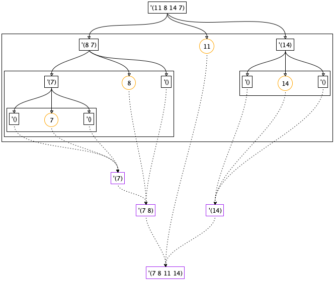
Рисунок 148: Графическая иллюстрация алгоритма быстрой сортировки
Чтобы лучше понять, как работает алгоритм быстрой сортировки, давайте рассмотрим пример быстрой сортировки (list 11 8 14 7). На рисунке 148 этот процесс показан графически. Фигура состоит из верхней половины, фазы разделения и нижней половины, фазы подчинения(conquer).
Фаза разделения представлена прямоугольниками и сплошными стрелками. Три стрелки выходят из каждого списка в прямоугольной рамке и переходят в прямоугольник с тремя частями: обведенный круговой элемент в середине, слева от него заключенный в рамку список чисел, меньших, чем сводный, и справа от него список в прямоугольнике с теми числами, которые больше чем стержень. Каждый из этих шагов выделяет по крайней мере одно число в качестве стержня, что означает, что два соседних списка короче, чем данный список. Следовательно, завершается и весь процесс.
Рассмотрим первый шаг, на котором находится ввод (list 11 8 14 7). Опорный элемент(вращения/pivot item) - 11. Разделение списка на элементы больше и меньше 11 дает (list 8 7) и (list 14). Остальные шаги фазы разделения работают аналогично. Разделение заканчивается, когда все числа были изолированы как опорные элементы(pivot elements). На этом этапе вы уже можете считать окончательный результат, считывая pivots(оси вращения) слева направо.
Фаза завоевания(подчинения) представлена пунктирными стрелками и списками в прямоугольной рамке. Три стрелки входят в каждое поле результата: средняя - от точки поворота, левая - от результата сортировки меньших чисел в рамке, а правая - от результата сортировки больших чисел в рамке. Каждый шаг добавляет по крайней мере одно число в список результатов, сводную точку, то есть списки растут к нижней части диаграммы. Поле внизу - это отсортированный вариант списка вверху.
Взгляните на крайнюю левую, самую верхнюю ступень завоевания. Она объединяет опору 7 с двумя пустыми списками, в результате чего получается '(7). Следующий вниз соответствует этапу разбиения, на котором выделяется 8 и, таким образом, получается '(7 8). Каждый уровень фазы завоевания отражает соответствующий уровень фазы разделения. В конце концов, общий процесс рекурсивен.
Упражнение 424. Нарисуйте диаграмму быстрой сортировки, как на рис. 148 для (list 11 9 2 18 12 14 4 1).
; [List-of Number] -> [List-of Number] ; produces a sorted version of alon (define (quick-sort< alon) (cond [(empty? alon) '()] [else ...]))
Поскольку размер остальной части списка неизвестен, мы оставляем задачу разбиения списка на две вспомогательные функции: smallers(меньшие) и largers(большие). Они обрабатывают список и отфильтровывают те элементы, которые меньше и больше, соответственно, чем сводная таблица. Следовательно, каждая вспомогательная функция принимает два аргумента, а именно список чисел и число. Разработка этих двух функций - это упражнение в структурной рекурсии. Попробуйте сами или прочтите определения, показанные на рисунке 149.
; [List-of Number] -> [List-of Number] ; produces a sorted version of alon ; assume the numbers are all distinct (define (quick-sort< alon) (cond [(empty? alon) '()] [else (local ((define pivot (first alon))) (append (quick-sort< (smallers alon pivot)) (list pivot) (quick-sort< (largers alon pivot))))])) ; [List-of Number] Number -> [List-of Number] (define (largers alon n) (cond [(empty? alon) '()] [else (if (> (first alon) n) (cons (first alon) (largers (rest alon) n)) (largers (rest alon) n))])) ; [List-of Number] Number -> [List-of Number] (define (smallers alon n) (cond [(empty? alon) '()] [else (if (< (first alon) n) (cons (first alon) (smallers (rest alon) n)) (smallers (rest alon) n))])) Рисунок 149: Алгоритм быстрой сортировки
-
(quick-sort< (smallers alon pivot)), которое сортирует список элементов меньше, чем pivot(поворотная точка); а также
-
(quick-sort< (largers alon pivot)), которое сортирует список элементов больше, чем pivot(поворотная точка).
(quick-sort< (list 11 8 14 7)) == (append (quick-sort< (list 8 7)) (list 11) (quick-sort< (list 14))) == (append (append (quick-sort< (list 7)) (list 8) (quick-sort< '())) (list 11) (quick-sort< (list 14))) == (append (append (append (quick-sort< '()) (list 7) (quick-sort< '())) (list 8) (quick-sort< '())) (list 11) (quick-sort< (list 14))) == (append (append (append '() (list 7) '()) (list 8) '()) (list 11) (quick-sort< (list 14))) == (append (append (list 7) (list 8) '()) (list 11) (quick-sort< (list 14))) ...
И рисунок 148, и расчет также показывают, как quick-sort< полностью игнорирует структуру данного списка. Первая рекурсия работает с двумя удаленными числами из первоначально данного списка, а вторая - с третьим элементом списка. Эти рекурсии не случайны, но они определенно не зависят от структуры определения данных.
Сравните организацию quick-sort< с функцией sort> из Разработка с помощью Композиции. Проектирование последней следует рецепту структурного проектирования, создавая программу, которая обрабатывает элементы списка элемент за элементом. Разбивая список, quick-sort< может ускорить процесс сортировки списка, хотя и за счет отказа от простого использования first и rest.
Упражнение 425. Четко сформулируйте формулировку цели для smallers и largers на рис. 149.
Упражнение 426. Завершите ручное выполнение выше. Внимательное изучение вычисления предлагает дополнительный тривиальный случай для quick-sort<. Каждый раз, когда quick-sort< использует список из одного элемента, она возвращает его как есть. В конце концов, отсортированная версия списка из одного элемента - это сам список.
Измените quick-sort<, чтобы воспользоваться этим наблюдением. Оцените пример еще раз. Сколько шагов сохраняет обновленный алгоритм?
Упражнение 427. В то время как quick-sort< во многих случаях быстро уменьшает размер проблемы, для небольших проблем он слишком медленный. Следовательно, люди используют quick-sort<, чтобы уменьшить размер проблемы и переключаются на другую функцию сортировки, когда список достаточно мал.
Разработайте версию quick-sort<, которая использует sort<(соответствующим образом адаптированный вариант sort> из a href="part_two.html#%28part._sec~3asort.I%29" data-pltdoc="x">Вспомогательных функций, которые повторяются), если длина ввода ниже некоторого порога.
Упражнение 428. Если вход в quick-sort< содержит одно и то же число несколько раз, алгоритм возвращает список, который строго короче входного. Почему? Устраните проблему, чтобы выходные данные были такими же длинными, как и входные.
Упражнение 429. Используйте filter чтобы определить smallers и largers.
Упражнение 430. Разработайте вариант quick-sort<, который использует только одну функцию сравнения, например <. Её этап разделения делит данный список alon только на список, содержащий только элементы alon меньшего размера, чем pivot(поворотный эемент), и еще один с теми, которые не меньше..
Используйте local чтобы упаковать программу как единую функцию. Абстрагируйте эту функцию, чтобы она использовала список и функцию сравнения.
26 Разработка алгоритмов
В обзоре к этой части уже объясняется, что проектирование функций генеративной рекурсии является более индивидуальным, чем структурное проектирование. Как показано в первой главе, две генеративные рекурсии могут радикально отличаться по способу обработки функций. Как bundle, так и quick-sort< обрабатывают списки, но в то время как первая, по крайней мере, соблюдает последовательность в данном списке, последняя по своему желанию переупорядочивает данный список. Вопрос в том, может ли единый рецепт проектирования помочь в создании столь сильно различающихся функций.
В первом разделе показано, как адаптировать размерность процесса в рецепте проектирования к генеративной рекурсии. Второй раздел посвящен другому новому явлению: алгоритм может не дать ответа на некоторые входные данные. Поэтому программисты должны анализировать свои программы и дополнять информацию о конструкции комментарием о завершении. Остальные разделы противопоставляют структурную и генеративную рекурсию.
26.1 Адаптация рецепта разработки
-
Как и раньше, мы должны представить информацию о проблеме в виде данных на выбранном нами языке программирования. Выбор представления данных для проблемы влияет на наши представления о вычислительном процессе, поэтому необходимо заранее спланировать работу. Как вариант, будьте готовы вернуться назад и исследовать различные представления данных. Тем не менее, мы должны анализировать информацию о проблеме и определять коллекции данных.
-
Нам также нужна подпись, заголовок функции и предназначение. Поскольку генеративный шаг не связан со структурой определения данных, предназначение должно выходить за рамки того, что функция должна вычислять, а также объяснять, как функция вычисляет свой результат.
-
Полезно объяснить “как” на примерах функций, так как мы объясняли bundle и quick-sort< в предыдущей главе. То есть, в то время как примеры функций в структурном мире просто указывают, какой результат должна производить функция для каких входных данных, цель примеров в мире генеративной рекурсии - объяснить основную идею вычислительного процесса.
Для bundle в примерах указывается, как функция действует в целом и в некоторых граничных случаях. Для quick-sort< пример на рисунке 148 иллюстрирует, как функция разбивает данный список по элементу сводной таблицы. Добавляя такие отработанные примеры в предназначение, мы - разработчики - получаем лучшее понимание желаемого процесса и передаем это понимание будущим читателям этого кода.
-
Наше обсуждение предлагает общий шаблон для алгоритмов. Грубо говоря, при разработке алгоритма различаются два вида проблем: тривиально разрешимые и неразрешимые. Для этой части книги «тривиальный» это технический термин. Если данная проблема тривиально разрешима, алгоритм выдает соответствующее решение. Например, тривиально разрешимы проблемы сортировки пустого списка или списка из одного элемента. Список с большим количеством элементов - нетривиальная задача. Для этих нетривиальных проблем алгоритмы обычно генерируют новые проблемы того же типа, что и данная, рекурсивно решают их и объединяют решения в общее решение.
Исходя из этого наброска, все алгоритмы имеют примерно такую организацию:(define (generative-recursive-fun problem) (cond [(trivially-solvable? problem) (determine-solution problem)] [else (combine-solutions ... problem ... (generative-recursive-fun (generate-problem-1 problem)) ... (generative-recursive-fun (generate-problem-n problem)))])) Исходная проблема иногда требуется, чтобы объединить решения для вновь созданных проблем, поэтому она передается в combine-solutions (объединение решений). -
Этот шаблон - всего лишь примерный план, а не окончательная форма. Каждая часть шаблона напоминает нам о следующих четырех вопросах:
-
это тривиально решаемая проблема?
-
Как решаются тривиальные решения?
-
Как алгоритм генерирует новые проблемы, которые легче решить, чем исходная? Есть ли одна новая проблема, которую мы создаем, или их несколько?
-
Совпадает ли решение данной проблемы с решением (одной из) новых проблем? Или нам нужно объединить решения, чтобы создать решение исходной проблемы? И если да, то нужно ли нам что-нибудь из исходных данных о проблеме?
Чтобы определить алгоритм как функцию, мы должны выразить ответы на эти четыре вопроса в виде функций и выражений в терминах выбранного представления данных.На этом шаге снова может помочь попытка на основе таблиц из Проектирования с определениями данных ссылающихся на себя. Еще раз рассмотрите пример quick-sort< из quick-sort< example from Рекурсия, которая игнорирует структуру. Основная идея quick-sort< состоит в том, чтобы разделить данный список на список меньших и больших элементов и отсортировать их по отдельности. На рис. 150 показано, как работают некоторые простые числовые примеры для нетривиальных случаев. Из этих примеров легко догадаться, что ответ на четвертый вопрос - добавить отсортированный список меньших чисел, число pivot(поворота) и отсортированный список больших чисел, которые можно легко преобразовать в код.
-
-
Как только функция будет завершена, пора ее протестировать. Как и прежде, целью тестирования является обнаружение и устранение ошибок.
alon
pivot
sorted, smaller
sorted, larger
expected
'(2 3 1 4)
2
'(1)
'(3 4)
'(1 2 3 4)
'(2 0 1 4)
2
'(0 1)
'(4)
'(0 1 2 4)
'(3 0 1 4)
3
'(0 1)
'(4)
'(0 1 3 4)
Рисунок 150: Табличный подход к угадыванию для комбинирования решений
Упражнение 431. Ответьте на четыре ключевых вопроса для задачи bundle и на первые три вопроса для задачи quick-sort<. Сколько требуется экземпляров generate-problem
Упражнение 432. В упражнении 219 вводится функция food-create, которая потребляет Posn и создает случайно выбранный Posn, который гарантированно отличается от заданного. Сначала переформулируйте две функции как одно определение, используя local; затем обоснуйте разработку food-create.
26.2 Прекращение
(bundle '("a" "b" "c") 0) == (cons (implode (take '("a" "b" "c") 0)) (bundle (drop '("a" "b" "c") 0) 0)) == (cons (implode '()) (bundle (drop '("a" "b" "c") 0) 0)) == (cons "" (bundle (drop '("a" "b" "c") 0) 0)) == (cons "" (bundle '("a" "b" "c") 0))
Сравните это понимание с разработками, представленными в первых четырех частях. Каждая функция, разработанная в соответствии с рецептом, либо выдает ответ, либо выдает сигнал ошибки для каждого входа. В конце концов, рецепт диктует, что каждая естественная рекурсия потребляет немедленную часть ввода, а не сам ввод. Поскольку данные построены иерархически, ввод сжимается(уменьшается) на каждом этапе. В конце концов функция применяется к элементарному фрагменту данных, и рекурсия останавливается.
Это напоминание также объясняет, почему генеративные рекурсивные функции могут расходиться. Согласно рецепту проектирования генеративной рекурсии, алгоритм может генерировать новые проблемы без каких-либо ограничений. Если рецепт разработки требовал гарантии того, чтобы новые проблемы были «меньше», чем данная, они бы прекратили свое существование. Теория вычислений на самом деле показывает, что в конце концов мы должны снять эти ограничения. Но наложение такого ограничения без нужды усложнило бы разработку таких функций, как bundle.
Поэтому в этой книге мы оставляем первые шесть шагов рецепта разработки в основном неизменными и дополняем их седьмым шагом: termination argument(аргументом завершения). На рисунке 151 представлена первая часть рецепта проектирования генеративной рекурсии, а на рисунке 152 - вторая. Они показывают рецепт проектирования в стандартной табличной форме. Неизмененные шаги отмечены тире в столбце activity(активности). Другие приходят с комментариями о том, чем рецепт разработки для генеративной рекурсии отличается от рецепта для структурной рекурсии. Последняя строка на рисунке 152 полностью новая.
Аргумент завершения может иметь одну из двух форм. Первый аргументирует, почему каждый рекурсивный вызов работает с проблемой, которая меньше заданной. Часто этот аргумент прост; в редких случаях вам нужно будет поработать с математиком, чтобы доказать теорему для таких аргументов. Второй тип иллюстрирует на примере, что функция не может завершаться. Вы не можете определить предикат для этого класса; в противном случае вы можете изменить функцию и убедиться, что она всегда завершается. В идеале он также должен описывать класс данных, для которых функция может зацикливаться. В редких случаях вы не сможете привести ни одного аргумента, потому что информатика еще недостаточно знает.
шаги
результат
деятельность
анализ проблемы
—
заголовок
предназначение, касающееся «как» для функции/p>
дополнить объяснение того, что функция вычисляет, однострочным описанием того, как она вычисляет результат
примеры
примеры и тесты
проработайте «как» на нескольких примерах
шаблон
фиксированный шаблон
—
Рисунок 151: Разработка алгоритмов (часть 1)
шаги
результат
деятельность
определение
полноценное определение функции
сформулировать условия для тривиально решаемых задач; сформулировать ответы на эти тривиальные случаи; определить, как создавать новые задачи для нетривиальных задач, возможно, используя вспомогательные функции; определить, как объединить решения сгенерированных проблем в решение данной проблемы
тесты
обнаруживать ошибки
—
прекращение
(1) аргумент размера для каждого рекурсивного вызова или (2) примеры исключений для завершения
исследовать, меньше ли проблемных данных для каждых рекурсивных данных, чем заданные данные; найти примеры, которые вызывают цикл функции
Рисунок 152: Разработка алгоритмов (часть 2)
; [List-of 1String] N -> [List-of String] ; bundles sub-sequences of s into strings of length n ; termination (bundle s 0) loops unless s is '() (define (bundle s n) ...)
; [List-of Number] -> [List-of Number] ; creates a sorted variant of alon ; termination both recursive calls to quick-sort< ; receive list that miss the pivot item (define (quick-sort< alon) ...)
Упражнение 433. Разработайте проверенную версию bundle, которая гарантированно завершится для всех входных данных. Она может сигнализировать об ошибке в тех случаях, когда исходная версия зацикливается.
; [List-of Number] Number -> [List-of Number] (define (smallers l n) (cond [(empty? l) '()] [else (if (<= (first l) n) (cons (first l) (smallers (rest l) n)) (smallers (rest l) n))]))
Упражнение 435. Когда вы работали над упражнением 430 или упражнением 428, вы, возможно, получили решения в виде циклов. Точно так же упражнение 434 фактически показывает, насколько хрупким является аргумент завершения для quick-sort<. Во всех случаях аргумент основан на идее, что smallers и largers производят списки, которые имеют максимальную длину, равную данному списку, и на нашем понимании, что ни один из них не включает данную pivot(опорную точку) в результат.
Основываясь на этом объяснении, измените определение quick-sort<, чтобы обе функции получали списки, которые короче заданного.
Упражнение 436. Сформулируйте аргумент завершения для food-create из упражнения 432.
26.3 Структурная рекурсия по сравнению с генеративной рекурсией
Шаблон для алгоритмов настолько общий, что включает в себя структурно рекурсивные функции. Рассмотрим левую часть рисунка 153. Этот шаблон предназначен для работы с одним тривиальным предложением и одним шагом генерации. Если заменить trivial? на empty? и generate на generate with rest, мы получаем шаблон для функций обработки списков; см. правую часть рисунка 153.
(define (general P) (cond [(trivial? P) (solve P)] [else (combine-solutions P (general (generate P)))]))
(define (special P) (cond [(empty? P) (solve P)] [else (combine-solutions P (special (rest P)))])) Рисунок 153: От генеративной к структурной рекурсии
-
special вычисляла длину своего ввода,
-
special делало отритцательным каждое число в данном списке чисел, и
-
special переводит указанный список строк в верхний регистр.
Теперь вы можете задаться вопросом, есть ли реальная разница между структурным рекурсивным проектированием и проектированием для генеративной рекурсии. Наш ответ - «это зависит от обстоятельств». Конечно, можно сказать, что все функции, использующие структурную рекурсию, являются лишь частными случаями порождающей рекурсии. Однако это отношение «все равно» бесполезно, если мы хотим понять процесс проектирования функций. Он смешивает два вида проектирования, которые требуют разных форм знаний и имеют разные последствия. Один полагается на систематический анализ данных и не более того; другой требует глубокого, часто математического, понимания самого процесса решения проблем. Один приводит программистов к естественному завершению функций; другой требует аргумента завершения. Объединение этих двух подходов бесполезно.
26.4 Делаем выбор
Когда вы взаимодействуете с функцией f, которая сортирует списки чисел, вы не можете узнать, является ли f sort< или quick-sort<. Обе функции ведут себя наблюдаемым образом эквивалентно. Наблюдаемая эквивалентность - центральная концепция изучения языков программирования. Возникает вопрос, какой из двух языков программирования должен обеспечивать. В более общем плане, когда мы можем спроектировать функцию, используя структурную рекурсию и генеративную рекурсию, мы должны выяснить, какую из них выбрать.
-
6 без остатка делится на 1, 2, 3 и 6;
-
25 без остатка делится на 1, 5 и 25.
-
18 делится на 1, 2, 3, 6, 9 и 18 без остатка;
-
24 делится на 1, 2, 3, 4, 6, 8, 12 и 24 без остатка.
; N[>= 1] N[>= 1] -> N ; finds the greatest common divisor of n and m (check-expect (gcd 6 25) 1) (check-expect (gcd 18 24) 6) (define (gcd n m) 42)
Отсюда мы разрабатываем как структурное, так и генеративно-рекурсивное решение. Поскольку эта часть книги посвящена генеративной рекурсии, мы просто представляем структурное решение на рис. 154 и оставляем конструктивные идеи упражнениям. Просто обратите внимание, что (= (remainder n i) (remainder m i) 0) кодирует идею о том, что и n, и m «без остатка» делятся на i.
(define (gcd-structural n m) (local (; N -> N ; determines the gcd of n and m less than i (define (greatest-divisor-<= i) (cond [(= i 1) 1] [else (if (= (remainder n i) (remainder m i) 0) i (greatest-divisor-<= (- i 1)))]))) (greatest-divisor-<= (min n m)))) Рисунок 154: Нахождение наибольшего общего делителя с помощью структурной рекурсии
Упражнение 438. По вашим словам: как работает greatest-divisor-<=? Используйте рецепт разработки, чтобы подобрать нужные слова. Почему локально определенный greatest-divisor-<= повторяется на (min n m)?
(gcd-structural 101135853 45014640)
(time (gcd-structural 101135853 45014640))
для двух натуральных чисел, L для большого(large) и S для меньшего(small), наибольший общий делитель равен наибольшему общему делителю S и остатку от L, деленному на S.
-
Данные числа 18 и 24.
-
По интуиции у них такой же gcd как 18 и 6.
-
И у этих двоих наибольший общий делитель такой же, как у 6 и 0.
-
когда меньшее из чисел равно 0, мы сталкиваемся с тривиальным случаем;
-
большее из двух чисел является решением в тривиальном случае;
-
для создания новой проблемы требуется одна операция remainder; а также
-
Вышеприведенное уравнение говорит нам, что ответ на вновь возникшую проблему также является ответом на первоначально данную проблему.
(define (gcd-generative n m) (local (; N[>= 1] N[>=1] -> N ; generative recursion ; (gcd L S) == (gcd S (remainder L S)) (define (clever-gcd L S) (cond [(= S 0) L] [else (clever-gcd S (remainder L S))]))) (clever-gcd (max m n) (min m n)))) Рисунок 155: Нахождение наибольшего общего делителя с помощью порождающей(генеративной) рекурсии
На Рисунке 155 представлено определение алгоритма. Определение local вводящее рабочую лошадку функции: clever-gcd. Её первая линия cond обнаруживает тривиальный случай, сравнивая smaller с 0, и дает соответствующее решение. Генеративный шаг использует smaller в качестве нового первого аргумента и (remainder large small) в качестве нового второго аргумента для clever-gcd.
(gcd-generative 101135853 45014640)
... == (clever-gcd 101135853 45014640) == (clever-gcd 45014640 11106573) == (clever-gcd 11106573 588348) == (clever-gcd 588348 516309) == (clever-gcd 516309 72039) == (clever-gcd 72039 12036) == (clever-gcd 12036 11859) == (clever-gcd 11859 177) == (clever-gcd 177 0)
(time (gcd-generative 101135853 45014640))
Теперь вы можете подумать, что разработка генеративной рекурсии обнаружила гораздо более быстрое решение проблемы gcd, и вы можете заключить, что генеративная рекурсия - это всегда правильный путь. Это суждение слишком опрометчиво по трем причинам. Во-первых, даже хорошо разработанный алгоритм не всегда быстрее, чем эквивалентная структурно-рекурсивная функция. Например, quick-sort< выигрывает только для больших списков; для маленьких стандартная функция sort< работает быстрее. Хуже того, плохо спроектированный алгоритм может нанести ущерб производительности программы. Во-вторых, обычно проще разработать функцию, используя рецепт структурной рекурсии. И наоборот, разработка алгоритма требует представления о том, как создавать новые проблемы, - шаг, который часто требует глубокого понимания. Наконец, программисты, читающие функции, могут легко понять структурно рекурсивные функции даже без большой документации. Однако генеративный этап алгоритма основан на «эврике!» и без хорошего объяснения его трудно понять будущим читателям, в том числе и в более старых версиях вас самих.
Опыт показывает, что большинство функций программы используют структурное проектирование; лишь немногие используют генеративную рекурсию. Когда мы сталкиваемся с ситуацией, когда разработка может использовать рецепт либо для структурной, либо для генеративной рекурсии, лучший подход - начать со структурной версии. Если результат оказывается слишком медленным для поставленной задачи - и только тогда - пора исследовать использование генеративной рекурсии.
(quick-sort< (list 10 6 8 9 14 12 3 11 14 16 2))
(quick-sort< (list 1 2 3 4 5 6 7 8 9 10 11 12 13 14))
Упражнение 442. Добавьте sort< и quick-sort< в область определений. Выполните тесты функций, чтобы убедиться, что они работают на базовых примерах. Также разработайте create-tests, функцию, которая случайным образом создает большие тестовые примеры. Затем изучите, насколько быстро каждый из них работает на различных списках.
Подтверждает ли эксперимент утверждение о том, что функция простой сортировки sort< часто выигрывает у функции быстрой сортировки quick-sort<, для коротких списков и наоборот?
Определите точку перехода. Используйте её для создания умной функции сортировки, которая ведет себя как quick-sort< для больших списков и как sort< для списков ниже этой точки перехода. Сравните с упражнением 427.
(define (gcd-structural n m) (cond [(and (= n 1) (= m 1)) ...] [(and (> n 1) (= m 1)) ...] [(and (= n 1) (> m 1)) ...] [else (... (gcd-structural (sub1 n) (sub1 m)) ... ... (gcd-structural (sub1 n) m) ... ... (gcd-structural n (sub1 m)) ...)]))
Упражнение 444. Упражнение 443 означает, что проектирование для gcd-structural требует некоторого планирования и подхода «разработки с помощью композиции».
(define (gcd-structural S L) (largest-common (divisors S S) (divisors S L))) ; N[>= 1] N[>= 1] -> [List-of N] ; computes the divisors of l smaller or equal to k (define (divisors k l) '()) ; [List-of N] [List-of N] -> N ; finds the largest number common to both k and l (define (largest-common k l) 1)
27 Вариации на тему
Разработка алгоритма начинается с неформального описания процесса создания проблемы, которую легче решить, чем данная, и решение которой способствует решению данной проблемы. Придумывание такой идеи требует вдохновения, погружения в прикладную область и опыта работы с множеством различных примеров.
В этой главе представлено несколько наглядных примеров алгоритмов. Некоторые заимствованы непосредственно из математики, которая является источником многих идей; другие происходят из вычислительных настроек. Первый пример - это графическая иллюстрация нашего принципа: треугольник Серпинского. Второй объясняет принцип «разделяй и властвуй» на простом математическом примере поиска корня функции. Затем показано, как превратить эту идею в быстрый алгоритм поиска последовательностей, широко используемое применение. Третий раздел касается “parsing”(синтаксического анализа) последовательностей 1Strings, что также является распространенной проблемой в реальном программировании.
27.1 Фракталы, первая проба
Фракталы играют важную роль в вычислительной геометрии. Флейк пишет в Вычислительной красоте природы (The MIT Press, 1998), что «геометрию можно расширить, чтобы учесть объекты с дробной размерностью. Такие объекты, известные как fractals(фракталы), очень близки к отображению богатства и разнообразия форм, встречающихся в природе. Фракталы обладают структурным самоподобием на нескольких ... масштабах, а это означает, что часть фрактала часто будет выглядеть как целое ».
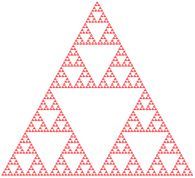 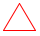 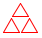
Рисунок 156: Треугольник Серпинского
На рисунке 156 показан пример фрактальной формы, известной как треугольник Серпинского. Основная форма - (равносторонний) треугольник, как и в центре. Когда этот треугольник будет составлен достаточно много раз треугольным образом, мы получим крайнюю левую форму.
Крайнее правое изображение на рисунке 156 поясняет шаг генерации. Само по себе это говорит о том, что для треугольника найдите середину каждой стороны и соедините их друг с другом. Этот шаг дает четыре треугольника; повторите процесс для каждого из внешних из этих трех треугольников, если только эти треугольники не слишком маленькие.
> (s-triangle 3) 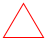
> (beside (s-triangle 3) (s-triangle 3)) 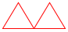
> (above (s-triangle 3) (beside (s-triangle 3) (s-triangle 3))) 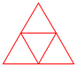
В этом разделе используется альтернативное описание для разработки алгоритма Серпинского; Аккумуляторы как результаты имеет дело с первым описанием. Учитывая, что цель состоит в том, чтобы создать изображение равностороннего треугольника, мы кодируем задачу с помощью (положительного) числа - длины стороны треугольника. Это решение дает сигнатуру, предназначение и заголовок:
; Number -> Image ; creates Sierpinski triangle of size side (define (sierpinski side) (triangle side 'outline 'red))
-
Когда данное число настолько мало, что рисовать внутри него треугольники бессмысленно, проблема тривиальна.
-
В этом случае достаточно построить треугольник.
-
В противном случае алгоритм должен сгенерировать треугольник Серпинского размером side / 2, поскольку сопоставление двух таких треугольников в любом направлении дает один треугольник размера side(стороны).
-
Если half-sized(половинный размер) - это треугольник Серпинского с размером side / 2, тоэто треугольник Серпинского с размером стороны - side.
(define SMALL 4) ; a size measure in terms of pixels (define small-triangle (triangle SMALL 'outline 'red)) ; Number -> Image ; generative creates Sierpinski Δ of size side by generating ; one for (/ side 2) and placing one copy above two copies (check-expect (sierpinski SMALL) small-triangle) (check-expect (sierpinski (* 2 SMALL)) (above small-triangle (beside small-triangle small-triangle))) (define (sierpinski side) (cond [(<= side SMALL) (triangle side 'outline 'red)] [else (local ((define half-sized (sierpinski (/ side 2)))) (above half-sized (beside half-sized half-sized)))])) Рисунок 157: Алгоритм Серпинского
С этими ответами легко определить функцию. На рис. 157 представлены подробности. «Условие тривиальности» преобразуется в (<= side SMALL) для некоторой константы SMALL(маленький). Для тривиального ответа функция возвращает треугольник заданного размера. В рекурсивном случае выражение local вводит имя half-sized для треугольника Серпинского, который вдвое меньше указанного размера. После того, как рекурсивный вызов сгенерировал маленький треугольник Серпинского, он составляет это изображение с помощью сверху - above и сбоку - beside.
; creates Sierpinski triangle of size side by ...
; ... generating one of size (/ side 2) and ; placing one copy above two composed copies
Поскольку sierpinski основана на генеративной рекурсии, определение функции и тестирование - не последний шаг. Мы также должны учитывать, почему алгоритм завершается при любом заданном допустимом вводе. Ввод sierpinski - одно положительное число. Если число меньше SMALL, алгоритм завершается. В противном случае рекурсивный вызов использует число, которое вдвое меньше заданного. Следовательно, алгоритм должен завершиться для всех положительных side, если SMALL также положителен.
Один взгляд на процесс Серпинского состоит в том, что он делит проблему пополам до тех пор, пока она не станет решаемой немедленно. Проявив немного воображения, вы увидите, что этот процесс можно использовать для поиска чисел с определенными свойствами. В следующем разделе эта идея подробно объясняется.
27.2 Бинарный поиск
f(r) = 0.
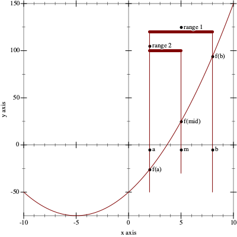
Рисуноск 158: Числовая функция f с корнем на интервале [a,b] (этап 1)
Пример задачи Ракета летит с постоянной скоростью v миль в час по прямой к какой-то цели на расстоянии d0 миль. Затем он ускоряется со скоростью a миль в час в квадрате за t часов. Когда она поразит цель?
d(t) = (v * t + 1/2 * a * t2)
d0 = (v * t0 + 1/2 * a * t02)
Обычно такие задачи требуют большей сложности, чем квадратные уравнения. В ответ математики потратили последние несколько столетий на разработку методов поиска корней для различных типов функций. В этом разделе мы изучаем решение, основанное на теореме о промежуточном значении(Intermediate Value Theorem - IVT), раннем результате анализа. Полученный алгоритм является основным примером порождающей(генеративной) рекурсии, основанной на математической теореме. Ученые-компьютерщики обобщили его на алгоритм бинарного поиска(binary search).
Теорема о промежуточном значении утверждает, что непрерывная функция f имеет корень в интервале [a,b] если f(a) и f(b) находятся на противоположных сторонах оси x. Под continuous(непрерывной) мы подразумеваем функцию, которая не «прыгает», не имеет пропусков и выполняется «плавным» путем.
Рисунок 158 иллюстрирует теорему о промежуточном значении. Функция f - это непрерывная функция, о чем свидетельствует непрерывный гладкий график. Он находится ниже оси x в точке a и выше в точке b, и действительно, она пересекает ось x где-то в этом интервале, обозначенном на рисунке как “range 1”(диапазон 1).
m = (a+b) / 2
; [Number -> Number] Number Number -> Number ; determines R such that f has a root in [R,(+ R ε)] ; assume f is continuous ; (2) (or (<= (f left) 0 (f right)) (<= (f right) 0 (f left))) ; generative divides interval in half, the root is in ; one of the two halves, picks according to (2) (define (find-root f left right) 0)
> (poly 2) 0
> (poly 4) 0
шаг
левый
f левое
правый
f правое
середина
f середины
n=1
3
-1
6.00
8.00
4.50
1.25
n=2
3
-1
4.50
1.25
?
?
-
Нам нужно условие, которое описывает, когда проблема решена, и соответствующий ответ. Учитывая наше обсуждение, это просто:
-
Результат сопоставления в тривиальном случае это left.
-
Для генеративного случая нам нужно выражение, которое генерирует новые проблемы для find-root. Согласно нашему неформальному описанию, этот шаг требует определения средней точки и значения функции в ней:Затем средняя точка используется для выбора следующего интервала. После IVT интервал [left,mid] является следующим кандидатом, еслихотя [mid,right] используется для рекурсивного вызова, еслиПри преобразовании в код тело local должно быть условным:
(cond [(or (<= (f left) 0 f@m) (<= f@m 0 (f left))) (... (find-root f left mid) ...)] [(or (<= f@m 0 (f right)) (<= (f right) 0 f@m)) (... (find-root f mid right) ...)]) В обоих предложениях мы используем find-root для продолжения поиска. -
Ответ на последний вопрос очевиден. Поскольку рекурсивный вызов find-root находит корень f, делать больше нечего.
; [Number -> Number] Number Number -> Number ; determines R such that f has a root in [R,(+ R ε)] ; assume f is continuous ; assume (or (<= (f left) 0 (f right)) (<= (f right) 0 (f left))) ; generative divides interval in half, the root is in one of the two ; halves, picks according to assumption (define (find-root f left right) (cond [(<= (- right left) ε) left] [else (local ((define mid (/ (+ left right) 2)) (define f@mid (f mid))) (cond [(or (<= (f left) 0 f@mid) (<= f@mid 0 (f left))) (find-root f left mid)] [(or (<= f@mid 0 (f right)) (<= (f right) 0 f@mid)) (find-root f mid right)]))])) Рисунок 159: Алгоритм find-root
Упражнение 446. обавьте тест из упражнения 445 в программу на рис. 159. Поэкспериментируйте с разными значениями ε.
Упражнение 447. Функция poly имеет два корня. Используйте find-root с poly и интервалом, который содержит оба корня.
Упражнение 448. Алгоритм find-root завершается для всех (непрерывных) f, left и right для которых выполнено предположение. Почему? Сформулируйте аргумент завершения/termination.
Подсказка . Предположим, что аргументы функции find-root описывают интервал размера S1. Насколько велико расстояние между left и right при первом и втором рекурсивных вызовах find-root? Через сколько шагов (- right left) станет меньше или равно ε?
Упражнение 449. Как показано на рисунке 159, find-root дважды вычисляет значение f для каждого граничного значения, чтобы сгенерировать следующий интервал. Используйте local, чтобы избежать этого пересчета.
Кроме того, find-root повторно вычисляет значение границы между рекурсивными вызовами. Например, (find-root f left right) вычисляет (f left) и, если [left,mid] выбран в качестве следующего интервала, find-root вычисляет (f left) снова. Представьте вспомогательную функцию, которая похожа на find-root, но использует не только left и right, но также (f left) и (f right) на каждом рекурсивном этапе.
Сколько перерасчетов (f left) эта конструкция максимально избегает? Примечание Два дополнительных аргумента этой вспомогательной функции изменяются на каждом рекурсивном этапе, но это изменение связано с изменением числовых аргументов. Эти аргументы представляют собой так называемые accumulators(аккумуляторы), о которых и идет речь в Аккумуляторах.
Упражнение 450. Функция f монотонно возрастает, если выполняется (<= (f a) (f b)) всякий раз, когда выполняется (< a b). Упростите find-root, предположив, что данная функция не только непрерывна, но и монотонно возрастает.
(define-struct table [length array]) ; A Table is a structure: ; (make-table N [N -> Number])
(define table1 (make-table 3 (lambda (i) i))) ; N -> Number (define (a2 i) (if (= i 0) pi (error "table2 is not defined for i =!= 0"))) (define table2 (make-table 1 a2))
; Table N -> Number ; looks up the ith value in array of t (define (table-ref t i) ((table-array t) i))
Табличным корнем t является число в (table-array t), близкое к 0. root index(Индекс корня) - это натуральное число i такое, что (table-ref t i) является корнем из таблицы t. Таблица t монотонно увеличивается, если (table-ref t 0) меньше, чем (table-ref t 1), (table-ref t 1) меньше, чем (table-ref t 2), и так далее.
Разработайте find-linear. Функция использует монотонно увеличивающуюся таблицу и находит наименьший индекс для корня из таблицы. Используйте структурный рецепт для N, начиная от 0 до 1, 2 и так далее до array-length данной таблицы. Такой процесс поиска корней часто называют линейным поиском - linear search.
Разработайте find-binary, которая также находит наименьший индекс для корня монотонно возрастающей таблицы, но использует для этого генеративную рекурсию. Как и при обычном бинарном поиске, алгоритм сужает интервал до минимально возможного размера, а затем выбирает индекс. Не забудьте сформулировать аргумент прекращения(termination).
Подсказка Ключевая проблема заключается в том, что индекс таблицы - это natural(натуральное) число, а не простое число. Следовательно, аргументы границы интервала для find(поиска) должны быть натуральными числами. Подумайте, как это наблюдение меняет (1) природу экземпляров тривиально решаемых проблем, (2) вычисление средней точки, (3) и решение о том, какой интервал генерировать следующим. Чтобы сделать это конкретным, представьте себе таблицу с 1024 слотами и корнем в 1023. Сколько вызовов find требуется в find-linear и find-binary соответственно?
27.3 Взгляд на парсинг(синтаксичекий разбор)Parsing
; A File is one of: ; – '() ; – (cons "\n" File) ; – (cons 1String File) ; interpretation represents the content of a file ; "\n" is the newline character
(list "h" "o" "w" " " "a" "r" "e" " " "y" "o" "u" "\n" "d" "o" "i" "n" "g" "?" "\n" "a" "n" "y" " " "p" "r" "o" "g" "r" "e" "s" "s" "?")
(list (list "h" "o" "w" " " "a" "r" "e" " " "y" "o" "u") (list "d" "o" "i" "n" "g" "?") (list "a" "n" "y" " " "p" "r" "o" "g" "r" "e" "s" "s" "?"))
(list "a" "b" "c" "\n" "d" "e" "\n" "f" "g" "h" "\n")
Проблема превращения последовательности 1Strings в список строк называется проблемой parsing (синтаксического анализа). Многие языки программирования предоставляют функции, которые извлекают из файлов строки, слова, числа и другие виды так называемых токенов. Но даже если они это сделают, часто программам требуется еще больше анализировать эти токены. Этот раздел дает представление о технике синтаксического анализа. Однако синтаксический анализ настолько сложен и настолько важен для создания полноценных программных приложений, что большинство программ бакалавриата включают как минимум один курс по синтаксическому анализу. Поэтому не думайте, что вы сможете правильно решить реальные проблемы синтаксического анализа даже после освоения этого раздела.
; File -> [List-of Line] ; converts a file into a list of lines (check-expect (file->list-of-lines (list "a" "b" "c" "\n" "d" "e" "\n" "f" "g" "h" "\n")) (list (list "a" "b" "c") (list "d" "e") (list "f" "g" "h"))) (define (file->list-of-lines afile) '())
-
Проблема тривиально разрешима, если файл это '().
-
В этом случае файл не содержит строки.
-
В противном случае файл содержит хотя бы одину "\n" или другую 1String. Эти элементы - до первого знака "\n" включительно, если он есть, должны быть отделены от остальной части файла(File). Остальное - это новая проблема того же типа, которую может решить file->list-of-lines.
-
Затем достаточно добавить(cons) начальный сегмент как одну строку к списку строк(Lines), которые являются результатом остальной части File.
; File -> [List-of Line] ; converts a file into a list of lines (define (file->list-of-lines afile) (cond [(empty? afile) '()] [else (cons (first-line afile) (file->list-of-lines (remove-first-line afile)))])) ; File -> Line ; retrieves the prefix of afile up to the first occurrence of NEWLINE (define (first-line afile) (cond [(empty? afile) '()] [(string=? (first afile) NEWLINE) '()] [else (cons (first afile) (first-line (rest afile)))])) ; File -> File ; drops the suffix of afile behind the first occurrence of NEWLINE (define (remove-first-line afile) (cond [(empty? afile) '()] [(string=? (first afile) NEWLINE) (rest afile)] [else (remove-first-line (rest afile))])) (define NEWLINE "\n") ; the 1String Рисунок 160: Преобразование файла в список строк
Отсюда легко создать остальную часть программы. В file->list-of-lines ответ в первом предложении должен быть '(), потому что пустой файл не содержит никаких строк. Ответ во втором предложении должен соединить(с помощью cons) значение (first-line afile) со значением (file->list-of-lines (remove-first-line afile)), потому что первое выражение вычисляет первую строку, а второе в одиночку вычисляет остальные строки. Наконец, вспомогательные функции структурно рекурсивно просматривают свои входы; их разработка - несложное упражнение. На рисунке 160 представлен полный программный код.
(file->list-of-lines (list "a" "b" "c" "\n" "d" "e" "\n" "f" "g" "h" "\n")) == (cons (list "a" "b" "c") (file->list-of-lines (list "d" "e" "\n" "f" "g" "h" "\n"))) == (cons (list "a" "b" "c") (cons (list "d" "e") (file->list-of-lines (list "f" "g" "h" "\n")))) == (cons (list "a" "b" "c") (cons (list "d" "e") (cons (list "f" "g" "h") (file->list-of-lines '())))) == (cons (list "a" "b" "c") (cons (list "d" "e") (cons (list "f" "g" "h") '())))
Упражнение 452. Как в first-line, так и в remove-first-line отсутствуют предназначение. Сормулируйте правильные формулировки целей.
Упражнение 453. Разработайте функцию tokenize. Она превращает строку(Line) в список токенов. Здесь токен - это либо 1String, либо String, состоящая из строчных букв и ничего другого. То есть отбрасываются все 1String с пробелами; все остальные буквы остаются как есть; и все следующие друг за другом буквы объединяются в “words”(слова). Подсказка Прочитать о функции string-whitespace? function.
(check-expect (create-matrix 2 (list 1 2 3 4)) (list (list 1 2) (list 3 4)))
28 Математические примеры
Многие решения математических задач используют генеративную рекурсию. Будущий программист должен познакомиться с такими решениями по двум причинам. С одной стороны, изрядное количество задач по программированию, по сути, связано с превращением таких математических идей в программы. С другой стороны, практика решения таких математических задач часто оказывается вдохновляющей для разработки алгоритмов. В этой главе рассматриваются три таких проблемы.
28.1 Метод Ньютона
Бинарный поиск представляет один метод поиска корня математической функции. Как и упражнения в том же эскизе раздела, метод естественным образом обобщается на вычислительные задачи, такие как поиск определенных значений в таблицах, векторах и массивах. В математических приложениях программисты склонны использовать методы, берущие начало в аналитической математике. Один из самых известных принадлежит Ньютону. Как и бинарный поиск, так называемый метод Ньютона многократно улучшает приближение к корню, пока оно не станет «достаточно близким». Начиная с предположения, скажем, r1, суть процесса состоит в построении касательной к f в точке r1 и определении его корня. Хотя касательная аппроксимирует функцию, определить ее корень также несложно. Достаточно часто повторяя этот процесс, N Ньютон доказал этот факт. алгоритм может найти корень r, для которого (f r) достаточно близко к 0.
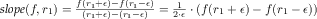
Упражнение 455. Переведите эту математическую формулу в функцию slope на ISL+, которая отображает функцию f и число r1 в наклон функции f в точке r1. Предположим, что ε - глобальная постоянная. Для ваших примеров используйте функции, точный наклон которых вы можете вычислить, скажем, горизонтальные линии, линейные функции и, возможно, полиномы, если вы знаете некоторые вычисления.
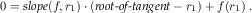
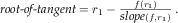
Упражнение 456. Разработайте root-of-tangent, функцию, которая отображает f и r1 в корень касательной через (r1,(f r1)).
; [Number -> Number] Number -> Number ; finds a number r such that (f r) is small ; generative repeatedly generates improved guesses (define (newton f r1) 1.0)
-
Если (f r1) достаточно близко к 0, проблема решена. Близость к 0 может означать (f r1) небольшое положительное или небольшое отрицательное число. Следовательно, мы проверяем его абсолютное значение:
-
Решение - r1.
-
Генеративный шаг алгоритма состоит в нахождении корня касательной к f в точке r1, которая генерирует следующее предположение. Применяя newton к f и это новое предположение, мы возобновляем процесс.
-
Ответ рекурсии также является ответом на исходную проблему.
; [Number -> Number] Number -> Number ; finds a number r such that (<= (abs (f r)) ε) (check-within (newton poly 1) 2 ε) (check-within (newton poly 3.5) 4 ε) (define (newton f r1) (cond [(<= (abs (f r1)) ε) r1] [else (newton f (root-of-tangent f r1))])) ; see exercise 455 (define (slope f r) ...) ; see exercise 456 (define (root-of-tangent f r) ...) Рисунок 161: Процесс Ньютона
На рисунке 161 показан newton. Он включает два теста, которые являются производными от тестов в бинарном поиске для find-root. В конце концов, обе функции ищут корень функции, а у poly есть два известных корня.
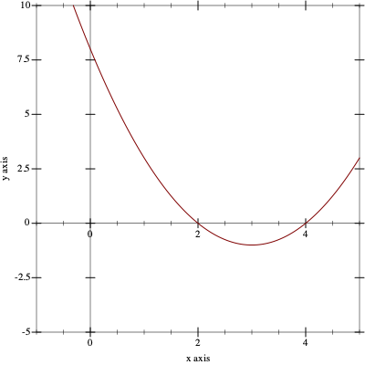
> (poly 3) -1
> (newton poly 3) /:division by zero
> (slope poly 3) 0
> (root-of-tangent poly 3) /:division by zero
> (newton poly 2.9999)
> (newton poly #i3.0)
> (slope poly #i3.0) #i0.0
> (root-of-tangent poly #i3.0) #i+inf.0
Короче говоря, newton демонстрирует полный спектр проблем, когда дело доходит до сложного поведения завершения. Для некоторых входных данных функция дает правильный результат. Для некоторых она сигнализирует об ошибках. А для других она заходит в бесконечный цикл или кажется, что она входит в один. Заголовок для newton - или какой-то другой текст - должен предупреждать других, кто хочет использовать функцию и будущих читателей, об этих сложностях, и хорошие математические библиотеки в распространенных языках программирования делают это.
Упражнение 457. Разработайте функцию double-amount, Это упражнение предложил Адриан Герман. которая вычисляет, сколько месяцев требуется, чтобы удвоить заданную сумму денег, когда сберегательный счет ежемесячно выплачивает проценты по фиксированной ставке.
Знания предметной области С помощью незначительных алгебраических манипуляций вы можете показать, что данная сумма не имеет значения. Только процентная ставка имеет значение. Также эксперты в предметной области знают, что удвоение происходит примерно через 72/r месяца, если процентная ставка r «мала».
28.2 Числовая интеграция
Пример Задачи Автомобиль движется с постоянной скоростью v метров в секунду. Как далеко он проходит за 5, 10, 15 секунд?
Ракета взлетает с постоянной скоростью ускорения 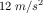. Какой высоты онf достигает через 5, 10, 15 секунд?
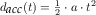
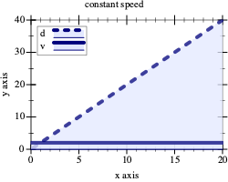 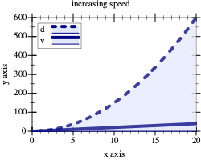
Рисунок 163: Пройденное расстояние с постоянной скоростью в зависимости от скорости разгона
Рисунок 163 графически иллюстрирует эту идею. Слева мы видим наложение двух графиков: сплошная плоская линия - это скорость автомобиля, а восходящая пунктирная линия - это пройденное расстояние. Быстрая проверка показывает, что последнее действительно является областью, определяемой первым и осью абсцисс в каждый момент времени. Точно так же графики справа показывают взаимосвязь между ракетой, движущейся с постоянно увеличивающейся скоростью, и высотой, которую она достигает. Определение этой области под графиком функции для некоторого определенного интервала называется (функцией) интегрирования - integration.
Хотя математикам известны формулы для двух примеров задач, дающих точные ответы, общая проблема требует вычислительных решений. Проблема в том, что кривые часто имеют сложную форму, больше похожую на те, что показаны на рисунке 164, которая предполагает, что кому-то нужно знать область между осью x, вертикальными линиями, обозначенными a и b, и графиком f. Прикладные математики определяют такие области приблизительно, суммируя площади множества небольших геометрических фигур. Поэтому естественно разработать алгоритмы, которые имеют дело с этими вычислениями.
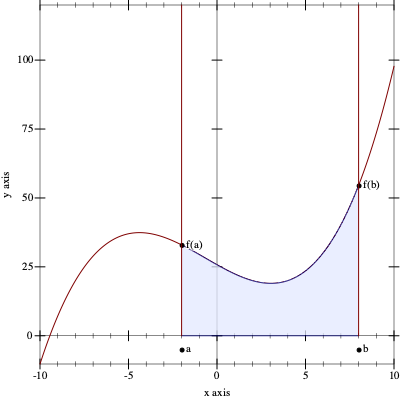
Рисунок 164: Функция интеграции f между a и b
(define (constant x) 20)
(check-expect (integrate constant 12 22) 200)
(check-expect (integrate linear 0 10) 100)
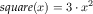
(define ε 0.1) ; [Number -> Number] Number Number -> Number ; computes the area under the graph of f between a and b ; assume (< a b) holds (check-within (integrate (lambda (x) 20) 12 22) 200 ε) (check-within (integrate (lambda (x) (* 2 x)) 0 10) 100 ε) (check-within (integrate (lambda (x) (* 3 (sqr x))) 0 10) 1000 ε) (define (integrate f a b) #i0.0) Рисунок 165: Обобщенная функция интеграции
На рис. 165 собраны результаты первых трех шагов рецепта проектирования. Рисунок добавляет предназначение и очевидное предположение относительно двух границ интервала. Вместо check-expect он использует check-within, которая предвосхищает числовые неточности, которые приходят с вычислительными приближениями в таких вычислениях. Аналогично, заголовок integrate указывает #i0.0 в качестве возвращаемого результата, сигнализируя о том, что функция, как ожидается, вернет неточное число.
Следующие два упражнения показывают, как превратить знания предметной области в функции интеграции. Обе функции вычисляют довольно грубые приближения. В то время как в конструкции первой используются только математические формулы, во второй также используются некоторые идеи структурной разработки. Выполнение этих упражнений дает необходимое понимание сути этого раздела, который представляет собой генеративно-рекурсивный алгоритм интеграции.
-
разделить интервал пополам на mid = (a + b) / 2;
-
вычислить площади этих двух трапеций:
-
[(a,0),(a,f(a)),(mid,0),(mid,f(mid))]
-
[(mid,0),(mid,f(mid)),(b,0),(b,f(b))];
-
-
затем сложите обе области.
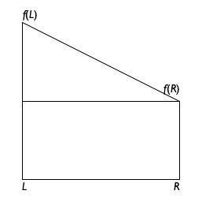 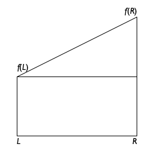
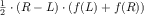
Разработайте функцию integrate-kepler. То есть превратите математические знания в функцию ISL+. Адаптируйте тестовые примеры из рисунка 165 для этого использования. Какой из трех тестов не проходит и на сколько?
Упражнение 459. Другой простой метод интеграции делит область на множество маленьких прямоугольников. Каждый прямоугольник имеет фиксированную ширину и такой же высокий, как график функции в середине прямоугольника. Сложение площадей прямоугольников дает оценку площади под графиком функции.
R = 10
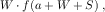
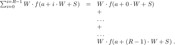
Превратите описание процесса в функцию ISL+. Адаптируйте контрольные примеры с рисунка 165 к этому случаю.
Чем больше прямоугольников использует алгоритм, тем ближе его оценка к реальной площади. Сделайте R константой верхнего уровня и увеличивайте ее в 10 раз, пока точность алгоритма не устранит проблемы со значением ε, равным 0.1.
Уменьшите ε до 0.01 и увеличьте R настолько, чтобы снова исключить все неудачные тестовые примеры. Сравните результат с упражнением 458.
Метод Кеплера в упражнении 458 сразу предлагает стратегию «разделяй и властвуй», подобную бинарному поиску, введенному в Бинарном поиске. Грубо говоря, алгоритм разделит интервал на две части, рекурсивно вычислит площадь каждой части и сложит два результата.
Упражнение 460. Разработайте алгоритм integrate-dc, который интегрирует функцию f между границами a и b, используя стратегию «разделяй и властвуй». Используйте метод Кеплера, когда интервал достаточно мал.
Подход «разделяй и властвуй» в упражнении 460 расточителен. Рассмотрим функцию, график которой в одной части ровный, а в другой быстро меняется; см. рисунок 166 для конкретного примера. Что касается уровня на графике, то разбивать интервал бессмысленно. Вычислить трапецию для всего интервала так же легко, как и для двух половин. Однако для «волнистой» части алгоритм должен продолжать делить интервал до тех пор, пока неровности графика не станут достаточно маленькими.
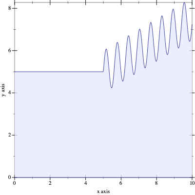
Рисунок 166: Кандидат на адаптивное интегрирование
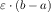
Упражнение 461. Разработайте integrate-adaptive. То есть превратить описание рекурсивного процесса в алгоритм ISL+. Обязательно адаптируйте тестовые примеры с рисунка 165 к этому использованию.
Не обсуждайте прекращение integrate-adaptive.
Всегда ли integrate-adaptive вычисляет лучший ответ, чем integrate-kepler или integrate-rectangles? Какой аспект integrate-adaptive гарантированно улучшится?
Терминология Алгоритм называется адаптивной интеграцией, потому что он автоматически выделяет время тем частям графа, которые в нем нуждаются, и тратит мало времени на другие. В частности, для тех частей f, которые являются уровнями, он выполняет всего несколько вычислений; для других частей он проверяет небольшие интервалы, чтобы уменьшить допустимую погрешность. Информатика знает множество адаптивных алгоритмов, и integrate-adaptive - лишь один из них.
28.3 Проект: Устранение(исключение) Гаусса
Пример задачи В мире бартера значения угля/coal (x), нефти/oil (y) и газа/gas (z) определяются следующими уравнениями обмена: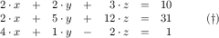
x = 1, y = 1, and z = 2.
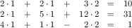
10 = 10, 31 = 31 и 1 =1.
; An SOE is a non-empty Matrix. ; constraint for (list r1 ... rn), (length ri) is (+ n 1) ; interpretation represents a system of linear equations ; An Equation is a [List-of Number]. ; constraint an Equation contains at least two numbers. ; interpretation if (list a1 ... an b) is an Equation, ; a1, ..., an are the left-hand-side variable coefficients ; and b is the right-hand side ; A Solution is a [List-of Number] (define M ; an SOE (list (list 2 2 3 10) ; an Equation (list 2 5 12 31) (list 4 1 -2 1))) (define S '(1 1 2)) ; a Solution Рисунок 167: Представление данных для систем уравнений
На рис. 167 представлено представление данных для нашей проблемной области. Оно включает в себя пример системы уравнений и ее решение. Это представление отражает суть системы уравнений, а именно числовые коэффициенты переменных в левой и правой частях значений. Имена переменных не играют никакой роли, потому что они подобны параметрам функций; это означает, что до тех пор, пока они последовательно переименовываются, уравнения имеют одни и те же решения.
; Equation -> [List-of Number] ; extracts the left-hand side from a row in a matrix (check-expect (lhs (first M)) '(2 2 3)) (define (lhs e) (reverse (rest (reverse e)))) ; Equation -> Number ; extracts the right-hand side from a row in a matrix (check-expect (rhs (first M)) 10) (define (rhs e) (first (reverse e)))
Упражнение 462. Разработайте функцию check-solution. Она потребляет SOE и Solution. Результатом будет #true, если вставка чисел из Solution для переменных в Уравнениях(Equation) SOE дает равные значения в левой и правой частях; в противном случае функция выдаст #false. Используйте check-solution, чтобы сформулировать тесты с check-satisfied.
Подсказка Первой разработайте функцию plug-in. Она использует левую часть уравнения (Equation) и Solution и вычисляет значение левой части, когда числа из решения подставляются для переменных.
Метод Исключения Гаусса - стандартный метод поиска решений систем линейных уравнений. Он состоит из двух шагов. Первый шаг - преобразовать систему уравнений в систему разной формы, но с тем же решением. Второй шаг - найти решения одного уравнения за раз. Здесь мы сосредоточимся на первом шаге, потому что это еще один интересный пример генеративной рекурсии.
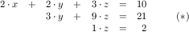
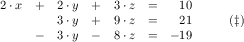
Упражнение 465. Разработайте subtract. Функция использует два уравнения(Equation) одинаковой длины. Она “subtracts”(вычитает) число, кратное второму уравнению, из первого, элемент за элементом, так что полученное уравнение (Equation) имеет 0 в первой позиции. Поскольку известно, что 0 , subtract возвращает оставшуюся часть списка, полученного в результате вычитаний.
; A TM is an [NEList-of Equation] ; such that the Equations are of decreasing length: ; n + 1, n, n - 1, ..., 2. ; interpretation represents a triangular matrix
Не занимайтесь пока завершающим этапом рецепта дизайна.
Упражнение 467. Измените алгоритм triangulate из упражнения 466 так, чтобы он сначала вращал уравнения, чтобы найти уравнение с ведущим коэффициентом, отличным от 0, прежде чем вычтет первое уравнение из оставшихся.
Завершается ли этот алгоритм для всех возможных систем уравнений?
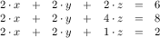
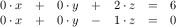
Упражнение 468. Измените triangulate из упражнения 467 так, чтобы она сигнализировала об ошибке при обнаружении SOE, все ведущие коэффициенты которой равны 0.
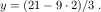
Упражнение 469. Разработайте функцию solve . Она потребляет SOEs и дает решение.
Hint Используйте структурную рекурсию для разработки. Начните с разработки функции, которая решает одно линейное уравнение с n+1 переменными, учитывая решение для последних n переменных. Как правило, эта функция подставляет значения для оставшейся части левой части, вычитает результат из правой части и делит на первый коэффициент. Поэкспериментируйте с этим предложением и приведенными выше примерами.
Задача Используйте существующую абстракцию и span class="RktSym">lambda для разработки solve.
Упражнение 470. Разработайте gauss, которая объединяет функцию triangulate из упражнения 468 и функцию solve из упражнения 469.
29 Алгоритмы, которые Backtrack(возвращаются/отступают назад)
Решение проблем не всегда идет по прямой. Иногда мы можем следовать одному подходу и обнаруживать, что мы застряли из-за того, что ошиблись. Один из очевидных вариантов - вернуться к тому месту, где мы приняли судьбоносное решение, и сделать другой поворот. Некоторые алгоритмы работают именно так. В этой главе представлены два примера. Первый раздел посвящен алгоритму обхода графов. Второе - это расширенное упражнение, в котором используется возврат в контексте шахматной головоломки.
29.1 Проход(путешествие) по Графам
Графики вездесущи в нашем мире и мире вычислений. Представьте себе группу людей, скажем, учеников вашей школы. Запишите все имена и соедините имена тех людей, которые знают друг друга. Вы только что создали свой первый неориентированный граф.
Теперь взгляните на рисунок 168, на котором изображен небольшой ориентированный граф. Он состоит из семи узлов - обведенных букв - и девяти ребер - стрелок. Граф может представлять собой уменьшенную версию сети электронной почты. Представьте себе компанию и все электронные письма, которые ходят туда-сюда. Запишите электронные адреса всех сотрудников. Затем, адрес за адресом, нарисуйте стрелку от адреса ко всем тем адресам, на которые владелец рассылает электронные письма в течение недели. Вот как вы создадите ориентированный граф на рисунке 168, хотя он может в конечном итоге выглядеть намного более сложным, почти непонятным.
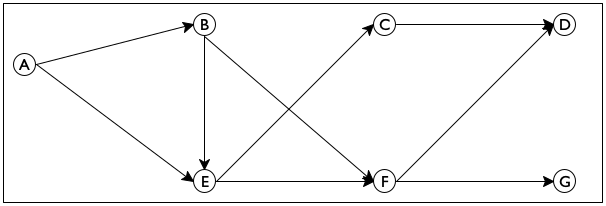
Пример задачи Разработайте алгоритм, который предлагает способ познакомить одного человека с другим в ориентированном графе электронной почты для крупной компании. Программа использует ориентированный граф, представляющий установленные соединения электронной почты и два адреса электронной почты. Он возвращает последовательность адресов электронной почты, которые связывают первое письмо со вторым.
-
отправьте электронное письмо от E к F, а затем к D.
-
отправьте его из E к C, а затем в D.
Глядя на рисунок 168, вы можете легко понять, как перейти от одного узла к другому, не задумываясь о том, как вы это сделали. Итак, представьте на мгновение, что граф на рис. 168 представляет собой большой парк. Также представьте, что кто-то говорит, что вы находитесь в точке E и вам нужно добраться до G. Вы можете ясно видеть два пути, один из которых ведет к точке C, а другой - к F. Следуйте по первому пути и обязательно помните, что также можно добраться от E до F. Теперь у вас есть новая проблема, а именно, как добраться от C до G. Ключевое понимание состоит в том, что эта новая проблема точно такая же, как и исходная проблема; она просит вас найти путь от одного узла к другому. Более того, если вы можете решить проблему, вы знаете, как перейти от E к G - просто добавьте шаг от E к C. Но нет пути от C к G. К счастью, вы помните, что также можно перейти от E к F, что означает, что вы можете вернуться(backtrack) к некоторой точке, где у вас есть выбор, и начать поиск оттуда.
(define sample-graph '((A (B E)) (B (E F)) (C (D)) (D ()) (E (C F)) (F (D G)) (G ())))
(define sample-graph '((A B E) (B E F) (C D) (D) (E C F) (F D G) (G)))
Упражнение 471. Переведите одно из приведенных выше определений в правильную форму списка, используя list и соответствующие символы.
; A Node is a Symbol.
Создайте функцию neighbors(соседи). Она потребляет Узел(Node n) и Граф (Graph g) и создает список ближайших соседей n в графе g.
; Node Node Graph -> [List-of Node] ; finds a path from origination to destination in G (define (find-path origination destination G) '())
(find-path 'C 'D sample-graph) (find-path 'E 'D sample-graph) (find-path 'C 'G sample-graph)
-
Результат функции состоит из всех узлов, ведущих от origination(исходного) узла к destination(целевому) узлу, включая эти два. Легко представить себе другие, например пропуск любого из двух заданных узлов. В этом случае пустой путь может использоваться для обозначения отсутствия пути между двумя узлами.
-
В качестве альтернативы, поскольку в самом вызове уже перечислены два узла, в выходных данных могут упоминаться только “interior”(внутренние) узлы пути. Тогда ответ на первый вызов будет '(), потому что 'D является непосредственным соседом 'C. Конечно, в этом случае '() больше не может сигнализировать об ошибке.
; A Path is a [List-of Node]. ; interpretation The list of nodes specifies a sequence ; of immediate neighbors that leads from the first ; Node on the list to the last one. ; Node Node Graph -> [Maybe Path] ; finds a path from origination to destination in G ; if there is no path, the function produces #false (check-expect (find-path 'C 'D sample-graph) '(C D)) (check-member-of (find-path 'E 'D sample-graph) '(E F D) '(E C D)) (check-expect (find-path 'C 'G sample-graph) #false) (define (find-path origination destination G) #false)
-
Если два заданных узла напрямую соединены стрелкой в данном графе, путь состоит только из этих двух узлов. Но есть еще более простой случай, а именно, когда аргумент начала(origination) для find-path равен его месту назначения(destination).
-
Во втором случае проблема действительно тривиальна, и соответствующий ответ - (list destination).
-
Если аргументы различны, алгоритм должен проверить всех непосредственных соседей origination(источника) и определить, существует ли путь от любого из них к destination(месту назначения). Другими словами, выбор одного из этих соседей порождает новый экземпляр проблемы “find a path”(найти путь).
-
Наконец, как только у алгоритма есть путь от соседа origination(источника) к destination(месту назначения), легко построить полный путь от первого ко второму - просто добавьте origination(исходный) узел в список.
; [List-of Node] Node Graph -> [Maybe Path] ; finds a path from some node on lo-originations to ; destination; otherwise, it produces #false (define (find-path/list lo-originations destination G) #false)
(define (find-path origination destination G) (cond [(symbol=? origination destination) (list destination)] [else (... origination ... ...(find-path/list (neighbors origination G) destination G) ...)]))
(define (find-path origination destination G) (cond [(symbol=? origination destination) (list destination)] [else (local ((define next (neighbors origination G)) (define candidate (find-path/list next destination G))) (cond [(boolean? candidate) ...] [(cons? candidate) ...]))]))
; Node Node Graph -> [Maybe Path] ; finds a path from origination to destination in G ; if there is no path, the function produces #false (define (find-path origination destination G) (cond [(symbol=? origination destination) (list destination)] [else (local ((define next (neighbors origination G)) (define candidate (find-path/list next destination G))) (cond [(boolean? candidate) #false] [else (cons origination candidate)]))])) ; [List-of Node] Node Graph -> [Maybe Path] ; finds a path from some node on lo-Os to D ; if there is no path, the function produces #false (define (find-path/list lo-Os D G) (cond [(empty? lo-Os) #false] [else (local ((define candidate (find-path (first lo-Os) D G))) (cond [(boolean? candidate) (find-path/list (rest lo-Os) D G)] [else candidate]))])) Рисунок 169: Поиск пути на графе
Рисунок 169 содержит полное определение find-path. Он также содержит определение find-path/list, которая обрабатывает свой первый аргумент посредством структурной рекурсии. Для каждого узла в списке find-path/list использует find-path для проверки пути. Если find-path действительно создает путь, этот путь является его ответом. В противном случае команда find-path/list выполняет возврат(backtracks).
Примечание Trees/Деревья обсуждает возврат в структурном мире. Особенно хорошим примером является функция, которая ищет голубоглазых предков в генеалогическом древе. Когда функция встречает узел, она сначала проводит поиск по одной ветви семейного дерева, скажем, отцовской, а если этот поиск дает #false, она ищет по другой половине. Поскольку графы обобщают деревья, сравнение этой функции с find-path является поучительным упражнением. Конец
Наконец, нам нужно проверить, дает ли find-path ответ для всех возможных входных данных. Относительно легко проверить, что для графа на рис. 168 и любых двух узлов в этом графе find-path всегда дает какой-то ответ. Стоп! Решите следующее упражнение, прежде чем читать дальше.
Упражнение 472. Проверьте find-path. Используйте эту функцию, чтобы найти путь от 'A к 'G в sample-graph. Какой из них находит? Почему?
Разработайте функцию test-on-all-nodes, которая использует граф g и определяет, существует ли путь между любой парой узлов.
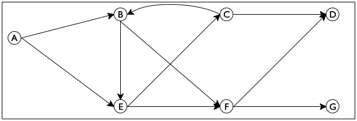
Рисунок 170: Ориентированный граф с циклом
Однако для других графов find-path может не завершаться для определенных пар узлов. Рассмотрим граф на рисунке 170.
Стоп! Определите cyclic-graph для представления графа на этом рисунке.
(find-path 'B 'D cyclic-graph) == .. (find-path 'B 'D cyclic-graph) .. == .. (find-path/list (list 'E 'F) 'D cyclic-graph) .. == .. (find-path 'E 'D cyclic-graph) .. == .. (find-path/list (list 'C 'F) 'D cyclic-graph) .. == .. (find-path 'C 'D cyclic-graph) .. == .. (find-path/list (list 'B 'D) 'D cyclic-graph) .. == .. (find-path 'B 'D cyclic-graph) ..
Таким образом, termination argument(аргумент прекращения) звучит так. Если некоторый заданный граф свободен от циклов, find-path производит некоторый вывод для любых заданных входных данных. В конце концов, каждый путь может содержать только конечное число узлов, и число путей тоже конечно. Таким образом, функция либо полностью проверяет все решения, начиная с некоторого заданного узла, либо находит путь от источника к узлу назначения. Однако, если граф содержит цикл, то есть путь от некоторого узла обратно к самому себе, find-path может не дать результата для некоторых входных данных.
В следующей части представлен метод разработки программ, который решает именно такие проблемы. В частности, он представляет вариант find-path, который может работать с циклами в графе.
Упражнение 473. Протестируйте find-path на 'B, 'C и графике на рисунке 170. Также используйте тест-на-всех-узлах из упражнения 472 на этом графе.
Упражнение 474. Переделайте программу find-path как единую функцию.
Упражнение 475. Перепроектируйте find-path/list так, чтобы он использовал существующую абстракцию списка из рисунков 95 и 96 вместо явной структурной рекурсии. Подсказка Прочтите документацию по ormap Racket. Чем она отличается от функции ormap в ISL+? Будет ли здесь полезно первое?
Замечание об абстракции данных Вы могли заметить, что функции find-path не нужно знать, как определяется Graph. Пока вы предоставляете правильную функцию neighbors для Graph, find-path работает отлично. Короче говоря, программа find-path использует data abstraction(абстракцию данных).
Как говорится в Абстракции, абстракция данных работает так же, как абстракция функций. Здесь вы могли бы создать функцию abstract-find-path, которая потребляла бы на один параметр больше, чем find-path: neighbors. Если вы всегда передаете abstract-find-path графу G из Graph и функции сопоставления соседей (neighbors), она будет обрабатывать граф должным образом. В то время как дополнительный параметр предполагает абстракцию в обычном смысле, требуемая связь между двумя параметрами - G и neighbors - на самом деле означает, что abstract-find-path также абстрагируется по определению Graph. Поскольку последнее является определением данных, идея получила название абстракции данных.
Когда программы становятся большими, абстракция данных становится критически важным инструментом для построения компонентов программы. В следующем томе серии How to Design(как разрабатывать) эта идея подробно рассматривается; следующий раздел иллюстрирует эту идею другим примером. Конец
Упражнение 476. Конечные автоматы ставят проблему, касающуюся конечных автоматов и строк, но сразу переходят к этой главе, потому что решение требует генеративной рекурсии. Теперь вы приобрели знания о разработке, необходимые для решения этой проблемы.
Создайте функцию fsm-match. Она потребляет представление данных конечного автомата и строки. Он выдает #true, если последовательность символов в строке вызывает переход конечного автомата из начального состояния в конечное состояние.
(define-struct transition [current key next]) (define-struct fsm [initial transitions final]) ; An FSM is a structure: ; (make-fsm FSM-State [List-of 1Transition] FSM-State) ; A 1Transition is a structure: ; (make-transition FSM-State 1String FSM-State) ; An FSM-State is String. ; data example: see exercise 109 (define fsm-a-bc*-d (make-fsm "AA" (list (make-transition "AA" "a" "BC") (make-transition "BC" "b" "BC") (make-transition "BC" "c" "BC") (make-transition "BC" "d" "DD")) "DD"))
; FSM String -> Boolean ; does an-fsm recognize the given string (define (fsm-match? an-fsm a-string) #false)
; [List-of X] -> [List-of [List-of X]] ; creates a list of all rearrangements of the items in w (define (arrangements w) (cond [(empty? w) '(())] [else (foldr (lambda (item others) (local ((define without-item (arrangements (remove item w))) (define add-item-to-front (map (lambda (a) (cons item a)) without-item))) (append add-item-to-front others))) '() w)])) (define (all-words-from-rat? w) (and (member (explode "rat") w) (member (explode "art") w) (member (explode "tar") w))) (check-satisfied (arrangements '("r" "a" "t")) all-words-from-rat?) Рисунок 171: Определение arrangements с использованием генеративной рекурсии
учитывая слово, создайте все возможные перестановки букв.
Объясните устройство генеративно-рекурсивной версии arrangements. Ответьте на все вопросы, которые задает дизайн-рецепт генеративной рекурсии, включая вопрос о завершении.
Создают ли arrangements на рис. 171 те же списки, что и решение Игры в слова, суть проблемы?
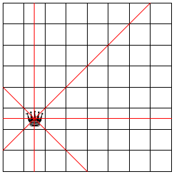
Рисунок 172: Шахматная доска с единственным ферзем и позиции, которые она угрожает
29.2 Проект: Backtracking(перебор с возвратами)
Головоломка с n ферзями - известная задача из мира шахмат, которая также естественным образом иллюстрирует применимость backtracking(перебора с возвратами). Для наших целей шахматная доска представляет собой сетку из n на n квадратов. Ферзь(queen) - это игровая фигура, которая может перемещаться произвольно далеко в горизонтальном, вертикальном Мы благодарим Марка Энгельберга за переформулировку этого раздела. или диагональном направлении, не «перепрыгивая» через другую фигуру. Мы говорим, что ферзь threatens(угрожает) квадрату, если он находится на нем или может перейти на него. Рисунок 172 иллюстрирует это понятие графическим образом. Ферзь находится во втором столбце и шестом ряду. Сплошные линии, исходящие от ферзя, проходят через все поля, которым угрожает ферзь.
Классическая задача о ферзях состоит в том, чтобы разместить 8 ферзей на шахматной доске 8 на 8 так, чтобы ферзи на доске не угрожали друг другу. Ученые-компьютерщики обобщают проблему и спрашивают, можно ли поставить n ферзей на шахматную доску n x n так, чтобы ферзи не представляли угрозы друг для друга.
Очевидно, что при n = 2 полная головоломка не имеет решения. Ферзь, размещенный на любом из четырех квадратов, угрожает всем оставшимся квадратам.
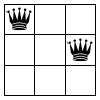 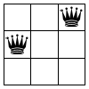 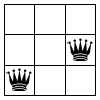
Рисунок 173: Три конфигурации ферзя для шахматной доски 3 на 3
Также нет решения для n = 3. На рисунке 173 представлены все различные расстановки двух ферзей, то есть решения для k = 3 и n = 2. В каждом случае левый ферзь занимает квадрат в левом столбце, а второй ферзь размещается в одном из двух квадратов, которому не угрожает первое. Размещение второго ферзя угрожает всем оставшимся незанятым клеткам, а это означает, что разместить третьего ферзя невозможно.
Упражнение 478. Вы также можете разместить первого ферзя во всех квадратах самого верхнего ряда, самого правого столбца и самого нижнего ряда. Объясните, почему все эти решения аналогичны трем сценариям, изображенным на рисунке 173.
Остается центральный квадрат. Возможно ли разместить даже второго ферзя после того, как вы поместили его на центральное поле доски 3 на 3?
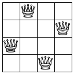
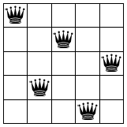
Рисунок 174: Решения головоломки n ферзей для досок 4 на 4 и 5 на 5
На рисунке 174 показаны два решения загадки n ферзей: левое - для n = 4, правое - для n = 5. На рисунке показано, как в каждом случае решение имеет по одному ферзю в каждой строке и столбце, что имеет смысл, потому что ферзь угрожает всему ряду и столбцу, исходящим из его квадрата.
Теперь, когда мы провели достаточно подробный анализ, можно переходить к этапу решения. Анализ предлагает несколько идей:
-
Проблема заключается в размещении одной ферзя за раз. Когда мы помещаем ферзя на доску, мы можем пометить соответствующие строки, столбцы и диагонали как непригодные для использования другими ферзями.
-
Для другого ферзя мы рассматриваем только те места, которые не находятся под угрозой.
-
На тот случай, если этот первый выбор места приведет к проблемам позже, мы запоминаем, какие другие поля подходят для размещения этого ферзя.
-
Если мы должны поставить ферзя на доску, но не осталось безопасных клеток, мы возвращаемся(backtrack) к предыдущему моменту в процессе, когда мы выбирали одно поле вместо другого, и пробуем один из оставшихся квадратов.
(define QUEENS 8) ; A QP is a structure: ; (make-posn CI CI) ; A CI is an N in [0,QUEENS). ; interpretation (make-posn r c) denotes the square at ; the r-th row and c-th column
В определении CI можно было бы использовать [1,QUEENS] вместо [0, QUEENS), но эти два определения в основном эквивалентны, и программисты делают отсчет от 0. Точно так же так называемая алгебраическая запись для шахматных позиций использует буквы от 'a до 'h для обозначения одного из размеров доски, что означает, что QP могла бы использовать CI и подобные буквы. Опять же, эти два примерно эквивалентны, и с натуральными числами в ISL+ легче создать много позиций, чем с буквами.
Упражнение 479. Создайте функцию threatening?. Она потребляет два QP и определяет, будут ли ферзи, размещенные на двух соответствующих полях, угрожать друг другу.
Знание предметной области (1) Изучите рисунок 172. Ферзь на этом рисунке угрожает всем квадратам на горизонтальной, вертикальной и диагональной линиях. И наоборот, ферзь на любом поле этих линий угрожает ферзю.
(2) Преобразуйте свои мысли в математические условия, которые связывают координаты клеток друг с другом. Например, все клетки по горизонтали имеют одинаковую координату y. Точно так же все клетки на одной диагонали имеют координаты, суммы которых одинаковы. Какая это диагональ? Для другой диагонали разница между двумя координатами остается неизменной. Какую диагональ описывает эта идея?
Подсказка После того, как вы определились со знаниями предметной области, сформулируйте набор тестов, охватывающий горизонтали, вертикали и диагонали. Не забудьте указать аргументы в пользу какой threatening?(угроза) должен выдавать #false.
Упражнение 480. Разработайте render-queens. Функция использует натуральное число n, список QP и Image. Она создает изображение шахматной доски n на n с данным изображением, размещенным в соответствии с заданными QP. QPs.
Вы можете найти изображение шахматной королевы в Интернете или создать упрощенное изображение с помощью доступных функций изображения.
; N -> [Maybe [List-of QP]] ; finds a solution to the n queens problem ; data example: [List-of QP] (define 4QUEEN-SOLUTION-2 (list (make-posn 0 2) (make-posn 1 0) (make-posn 2 3) (make-posn 3 1))) (define (n-queens n) #false)
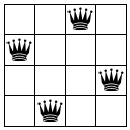
; N -> [Maybe [List-of QP]] ; finds a solution to the n queens problem (define 0-1 (make-posn 0 1)) (define 1-3 (make-posn 1 3)) (define 2-0 (make-posn 2 0)) (define 3-2 (make-posn 3 2)) (check-member-of (n-queens 4) (list 0-1 1-3 2-0 3-2) (list 0-1 1-3 3-2 2-0) (list 0-1 2-0 1-3 3-2) (list 0-1 2-0 3-2 1-3) (list 0-1 3-2 1-3 2-0) (list 0-1 3-2 2-0 1-3) ... (list 3-2 2-0 1-3 0-1)) (define (n-queens n) (place-queens (board0 n) n))
Упражнение 481. Тесты на рисунке 175 ужасны. Ни один настоящий программист никогда не объясняет все эти возможные результаты.
; [List-of QP] -> Boolean ; is the result equal [as a set] to one of two lists (define (is-queens-result? x) (or (set=? 4QUEEN-SOLUTION-1 x) (set=? 4QUEEN-SOLUTION-2 x)))
; Board N -> [Maybe [List-of QP]] ; places n queens on board; otherwise, returns #false (define (place-queens a-board n) #false)
; N -> Board ; creates the initial n by n board (define (board0 n) ...) ; Board QP -> Board ; places a queen at qp on a-board (define (add-queen a-board qp) a-board) ; Board -> [List-of QP] ; finds spots where it is still safe to place a queen (define (find-open-spots a-board) '())
Вы пока не можете подтвердить, что ваше решение предыдущего упражнения работает, потому что оно основано на обширном списке пожеланий. Оно требует представления данных Board(досок), которое поддерживает три функции из списка пожеланий. Это ваша оставшаяся проблема.
-
Board собирает(хранит) те позиции, где еще можно разместить ферзя;
-
Board содержит список позиций, на которых был размещен ферзь
-
Board представляет собой сетку из n на n клеток, каждая из которых может быть занята ферзем. Используйте структуру с тремя полями для представления клеток: одно для x, одно для y и третье, указывающее, находится ли клетка под угрозой.
Задача Используйте все три идеи, чтобы придумать три различных представления данных Board. Абстрагируйте свое решение к упражнению 482 и убедитесь, что оно работает с любым из ваших представлений данных Board.
30 Резюме
Эта пятая часть книги знакомит с идеей эврики! в разработке программы. В отличие от структурной разработки первых четырех частей, эврика! разработки начинается с представления о том, как программа должна решать проблему или обрабатывать данные, которые представляют проблему. Проектировать здесь означает придумать умный способ вызова рекурсивной функции для нового типа проблемы, которая похожа на данную, но проще.
Имейте в виду, что, хотя мы назвали это generative recursion(генеративной/порождающей рекурсией), большинство компьютерных ученых называют эти функции algorithms(алгоритмами). .
-
Стандартные наброски рецепта проектирования/разработки остается в силе.
-
Основное изменение касается этапа кодирования. Он вводит четыре новых вопроса о переходе от полностью универсального шаблона для генеративной рекурсии к полной функции. С двумя из этих вопросов вы прорабатываете «тривиальные» части процесса решения; а с двумя другими вы разрабатываете этап генеративного решения.
-
Незначительное изменение касается поведения завершения (termination) порождающих рекурсивных функций. В отличие от структурно разработанных функций, алгоритмы могут не завершаться для некоторых входных данных. Эта проблема может быть связана с внутренними ограничениями идеи или ее воплощения в коде. Тем не менее, будущий читатель вашей программы заслуживает предупреждения о потенциально «плохих» входах.
Вы столкнетесь с некоторыми простыми или хорошо известными алгоритмами в своих реальных задачах программирования, и ожидается, что вы с ними справитесь. Для создания действительно умных алгоритмов компании-разработчики программного обеспечения нанимают высокооплачиваемых специалистов, экспертов в предметной области и математиков для разработки концептуальных деталей, прежде чем они попросят программистов превратить концепции в программы. Вы также должны быть готовы к такого рода задачам, и лучшая подготовка - это практика.